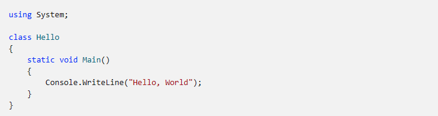
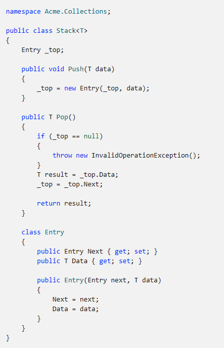
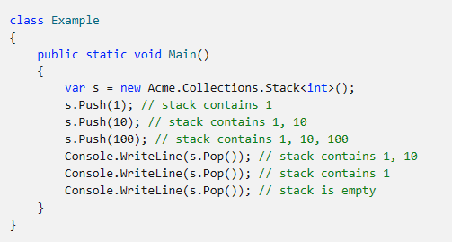

Программа "Hello, World" начинается с директивы using, которая ссылается на пространство имен System. Пространства имен позволяют иерархически упорядочивать программы и библиотеки C#. Пространства имен содержат типы и другие пространства имен. Например, пространство имен System содержит несколько типов (в том числе используемый в нашей программе класс Console) и несколько других пространств имен, таких как IO и Collections. Директива using, которая ссылается на пространство имен, позволяет использовать типы из этого пространства имен без указания полного имени. Благодаря директиве using в коде программы можно использовать сокращенное имя Console.WriteLine вместо полного варианта System.Console.WriteLine. Класс Hello, объявленный в программе "Hello, World", имеет только один член — это метод с именем Main. Метод Main объявлен с модификатором static. Методы экземпляра могут ссылаться на конкретный экземпляр объекта, используя ключевое слово this, а статические методы работают без ссылки на конкретный объект. По стандартному соглашению точкой входа программы C# является статический метод с именем Main. Выходные данные программы создаются в методе WriteLine класса Console из пространства имен System. Этот класс предоставляется библиотеками стандартных классов, ссылки на которые компилятор по умолчанию добавляет автоматически. Основными понятиями Организации в C# являются программы, пространства имен, типы, членыи сборки. В программе объявляются типы, которые содержат члены. Эти типы можно организовать в пространства имен. Примерами типов являются классы, структуры и интерфейсы. К членам относятся поля, методы, свойства и события. При компиляции программы на C# упаковываются в сборки. Сборки обычно имеют расширение .exe файла или .dll , в зависимости от того, реализуют ли они .exe или библиотекисоответственно. В качестве небольшого примера рассмотрим сборку, содержащую следующий код: 
Полное имя этого класса: Acme.Collections.Stack. Этот класс содержит несколько членов: поле с именем _top, два метода с именами Push и Pop, а также вложенный класс с именем Entry. Класс Entry, в свою очередь, содержит три члена: свойство с именем Next, свойство с именем Data и конструктор. StackЯвляется Stack классом. Он имеет параметр одного типа T, который замещается конкретным типом при использовании. Стек — это коллекция типа FILO (прибыл первым — обслужен последним). Новые элементы добавляются в верх стека. Удаляемый элемент исключается из верхней части стека. В предыдущем примере объявляется тип Stack, который определяет хранилище и поведение для стека. Можно объявить переменную, которая ссылается на экземпляр типа Stack для использования этой возможности. Сборки содержат исполняемый код в виде инструкций промежуточного языка (IL) и символьную информацию в виде метаданных. Перед выполнением JIT-компилятор среды CLR .NET преобразует код IL в сборке в код, зависящий от процессора. Сборка полностью описывает сама себя и содержит весь код и метаданные, поэтому в C# не используются директивы #include и файлы заголовков. Чтобы использовать в программе C# открытые типы и члены, содержащиеся в определенной сборке, вам достаточно указать ссылку на эту сборку при компиляции программы. Например, эта программа использует класс Acme.Collections.Stack из сборки acme.dll: 
Для компиляции программы вам потребуется создать ссылку на сборку, содержащую класс стека, определенный в примере выше. Программы C# можно хранить в нескольких исходных файлах. При компиляции программы C# все исходные файлы обрабатываются вместе, при этом они могут свободно ссылаться друг на друга. По сути, это аналогично тому, как если бы все исходные файлы были объединены в один большой файл перед обработкой. В C# никогда не используются опережающие объявления, так как порядок объявления, за редким исключением, не играет никакой роли. В C# нет требований объявлять только один открытый тип в одном исходном файле, а также имя исходного файла не обязано совпадать с типом, объявляемом в этом файле.Структура программы
denpashenko@mail.ru